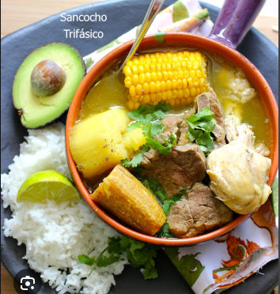

Sancocho

Descripción
El sancocho es uno de los platos típicos más reconocidos de Colombia (aunque también es un plato muy común en la cocina panameña y del Caribe como República Dominicana).Es un caldo o sopa normalmente espeso a base de tubérculos como la papa, la yuca, el ñame, la arracacha y ahuyama.
Ingredientes
- 1 Kg costilla de ternera o tira de asad
- 3 Plátanos Verdes “viches” es decir bien verdes (es un nombre coloquial con el que se refiere al estado del plátano)
- 1 kg yuca troceada y deshilachada
- kg papas peladas y partidas en trozos grandes (normalmente por la mitad)
- cubitos de caldo
Instrucciones
- Picar las cebollas largas, los tomates verdes. Las cebollas cabezonas las debes machacar y poner todo esto junto
- Se baja la temperatura de cocción a fuego medio, debes tapar la olla nuevamente y dejar cocinar por 30 minutos más.
- Luego de este tiempo puedes sacar cebolla entera y el cilantro y agregar el plátano y la papa, dejando que se cocine unos 10 minutos aproximadamente junto con la sal, la pimienta, el comino, el color.
- Añadir la Yuca y rallar un par de papas para dar espesor, dejar cocer por 10 minutos más, luego del cual bajarás a fuego muy lento y dejar por 10 minutos más al cabo del cual el sancocho queda listo para servir, añadiéndole a cada plato cilantro finamente picado para sazonar y adornar.